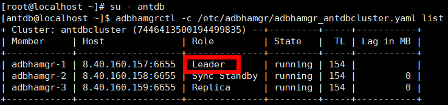
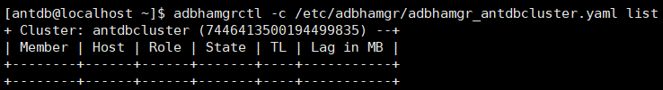
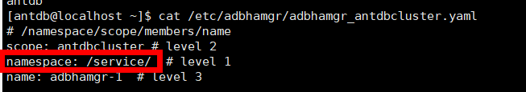
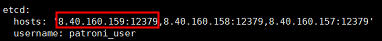

This section describes how to restore an AntDB instance that has been backed up to its original or a new location.
Context
Backup, replication, and archive copies can be used for restoration. Restoration to the original or a new location is supported. Replication copies and archive copies of replication copies cannot be used for restoration to the original location.
Prerequisites
- Before restoration, ensure that the remaining space of the data directory at the target location for restoration is greater than the size of the copy used for restoration before reduction. Otherwise, restoration will fail.
- Before restoring data to a new location, ensure that the database installation user has the read and write permissions on the target path for restoration.
- If the port of the target instance for restoration is occupied, release the occupied port before the restoration. Confirm the required ports. For details, see Preparing for Backup.
- If the target instance for restoration is a cluster instance, the AntDB service on each node must have been stopped and the AntDB port must not be occupied. Otherwise, the restoration will fail.
- For a centralized cluster, you need to configure the database configuration file before stopping the database. The procedure is as follows:
- Use PuTTY to log in to any node in the cluster and run the su - antdb command to switch to the OS user who runs the database.
- Run the adbhamgrctl -c /etc/adbhamgr/adbhamgr_antdbcluster.yaml list command (replace /etc/adbhamgr/adbhamgr_antdbcluster.yaml with the actual path) to query the leader node in the cluster, that is, the node whose Role is Leader. The following figure shows an example.

- Log in to the leader node in the cluster obtained in 2, add the following configuration under bootstrap in the database configuration file (for example, adbhamgr_antdbcluster.yaml), and save the file.
method: OceanProtectPITR OceanProtectPITR: command: "mv $ANTDBDATA/../OceanProtectData/DATADIR $ANTDBDATA/../" no_params: True keep_existing_recovery_conf: True
- $ANTDBDATA/../ is the upper-level directory of the data directory, for example, /home/antdb/app.
- DATADIR in $ANTDBDATA/../OceanProtectData/DATADIR indicates the data directory name, for example, /home/antdb/app/OceanProtectData/data.
- bootstrap is triggered when the DATADIR directory is empty and the cluster is started. If you start a new empty cluster, delete the configurations. Otherwise, the cluster will fail to be started, and the empty DATADIR directory will be suffixed with .failed. If the product is no longer used, delete the configurations before uninstalling it to avoid the preceding impact.
- Before the restoration, stop the AntDB database. The procedure is as follows:
- Centralized single-node system
- Use PuTTY to log in to the host where the AntDB database resides and run the su - antdb command to switch to the OS user who runs the database.
- Run the adb_ctl stop -D /home/antdb/app/data command to stop the database. In the command, /home/antdb/app/data indicates the data directory of the database.
- Centralized cluster
- Use PuTTY to log in to the host where the AntDB database resides and run the su - antdb command to switch to the OS user who runs the database.
- Run the systemctl stop adbhamgr command to stop the database.
- Perform operations in 2.a and 2.b on each node in the cluster, run the adbhamgrctl -c /etc/adbhamgr/adbhamgr_antdbcluster.yaml list command (replace /etc/adbhamgr/adbhamgr_antdbcluster.yaml with the actual path and file name) on any node in the cluster, and check whether the node information in the command output is cleared. If the command output is empty, the cluster has been stopped.

- Centralized single-node system
- For a centralized cluster, you need to delete the etcd data before stopping the database. The procedure is as follows:
- Run the cat /etc/adbhamgr/adbhamgr_antdbcluster.yaml command (replace /etc/adbhamgr/adbhamgr_antdbcluster.yaml with the actual path and file name) on any node in the cluster to view the configuration file.
- Find and record the value of namespace. The following figure shows an example.

- Find and record a group of client IP addresses and port numbers used by the clients to access the adbdcs component. The following figure shows an example.

- Run the adbdcsctl --endpoint=http://Client IP address:Port number used by the client to access the adbdcs component rm -r Namespace command to delete the etcd data. Example: adbdcsctl --endpoint=http://8.40.160.159:12379 rm -r /service/
Procedure
- Choose .
- Search for copies by AntDB instance resource or copy. This section describes how to search for copies by resource.
On the Resources tab page, locate the resource to be restored by resource name and click the name.
- Select the year, month, and day in sequence to find the copy.
If
 is displayed below a month or date, copies exist in the month or on the day.
is displayed below a month or date, copies exist in the month or on the day. - Restore data to a specified point in time or using a specific copy.
- Restoration using a specified copy
On the Copy Data page, click
 . In the row where the copy used for restoration resides, choose .
. In the row where the copy used for restoration resides, choose . - Restoration to a specified point in time
On the Copy Data page, click
 . In the blue part on the timeline, select a copy and choose .
. In the blue part on the timeline, select a copy and choose .
Table 1 describes the related parameters.Table 1 Parameters for restoring an AntDB instance Parameter
Description
Restore To
Select either Original location or New location.
NOTE:When performing restoration to a new location, if the copy has a tablespace directory other than the data directory, ensure that the OS user who installs the database at the new location can access the tablespace directory with the same name on the host at the new location.
Tag
If you select New location for restoration, you can use Tag to quickly filter and manage resources.
Location
If you select Original location for restoration, the location of the current instance is displayed by default.
Target Instance
Specify the target instance, which is mandatory if you select New location for restoration.
Script to Run Before Restoration
You can execute a custom script as required before a restoration job is executed or after the restoration job succeeds or fails. You need to enter the absolute path of the script.
- The Windows OS supports .bat scripts.
- Non-Windows OSs support .sh scripts.
NOTE:
If Script to Run upon Restoration Success is configured, the status of the restoration job is displayed as Succeeded on the product even if the script fails to be executed. Check whether the job details contain a message indicating that the post-processing script fails to be executed. If yes, modify the script in a timely manner.
Script to Run upon Restoration Success
Script to Run upon Restoration Failure
- Restoration using a specified copy
- Click OK.